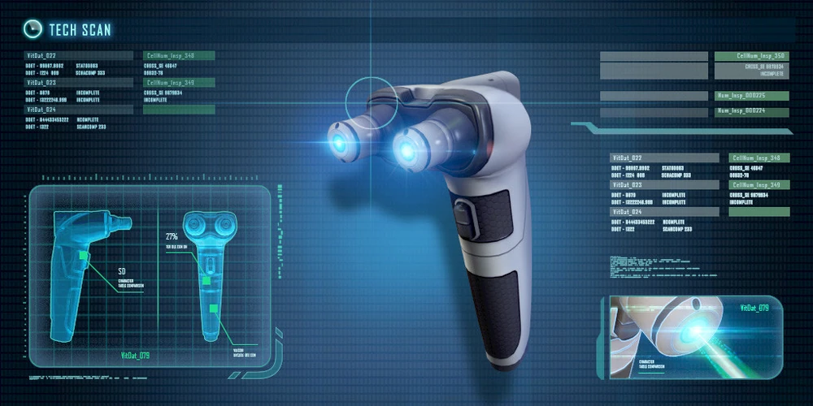
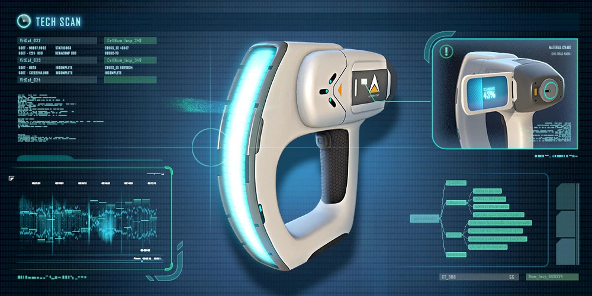
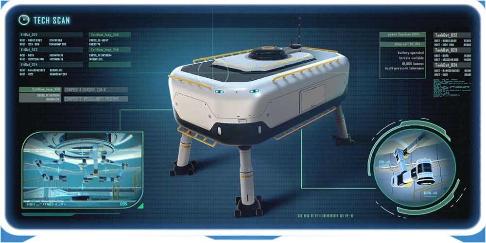
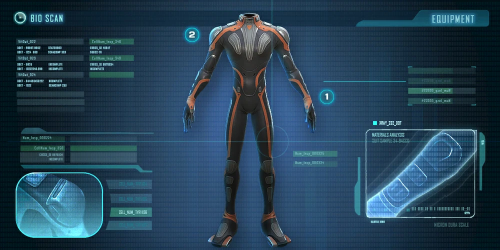
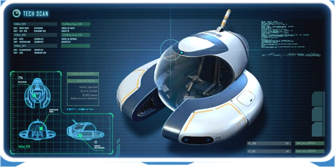
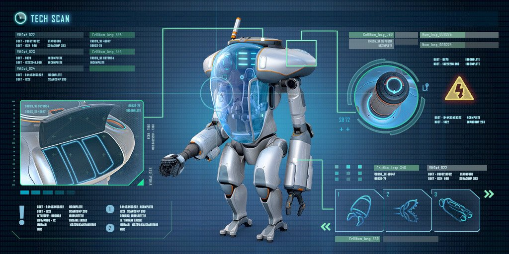

Construtor de Habitat
Uma impressora 3D portatil, Com ele, é possível construir fundações, salas multi-uso,
observatórios com janelas e inclusive a Moonpool (uma baía com uma grande estrutura para alocar e melhorar veículos).
Equipado com camêra tripla ação com lentes ZEiSS de Diamante Rosa, bateria de 100.000mAH,
acompanha modulo de carregamento solar. 300$

Scanner
Sensores de ultima geração ligados a um banco de dados onde possuí os dados de todos os componentes
de marte.O Scanner é um equipamento capas de escanear fragmentos, formas de vidas, tecnologias, o corpo viajante e
outros objetos espalhados pelo planeta. 300$

Moonpool
O Moonpool é uma Blueprint Seabase no formato .STL construído com o Construtor de Habitat.
Funciona como doca e estação de carregamento para Seamoth ou Prawn Suit e é a única sala onde é possivel modificar e
concertar os veiculos. 500$

Traje antiradiação
Um traje constituido por uma malha de fibra de carbono sintetizado com chubo entre as camadas
de fios, forrado por uma camada de couro de urso canadense. 100$

Seamoth
Apos a descoberta dos mares subterraneos e toda sua fauna e flora um submarino individual se tornou
indispensável Seamoth chegou para suprir essa nesscessidade. O Seamoth é um submersível pequeno de uma pessoa,
capaz de viajar em alta velocidade por longas distâncias. Possui um sistema de propulsão omnidirecional
que permite o movimento lateral e vertical em velocidades relativamente constantes, independentemente da orientação
do veículo. 1000$

Prawl Suit
O Nano Suit impermeável blindado reativo à pressão (abbv. Prawn) é um andador mecânico bípede,
projetado para uso em ambientes de extrema pressão e gravidade zero. Uma cobertura de vidro esmaltado reforçada com
grafeno protege o único ocupante, e a destreza é fornecida por membros hidráulicos que são capazes de atingir com
força suficiente para esmagar ossos e pulverizar rochas. Quando não estiver em uso fora da água, o veículo assume
a posição sentada. 1000$